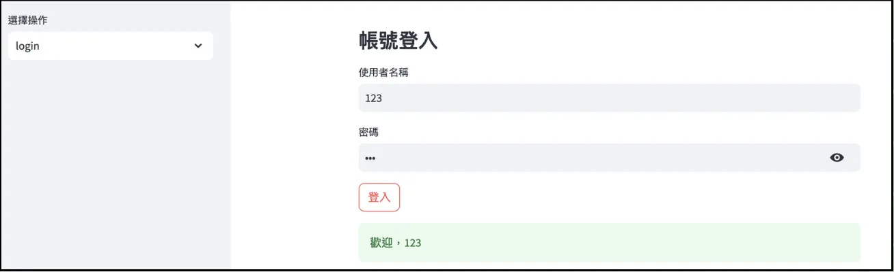
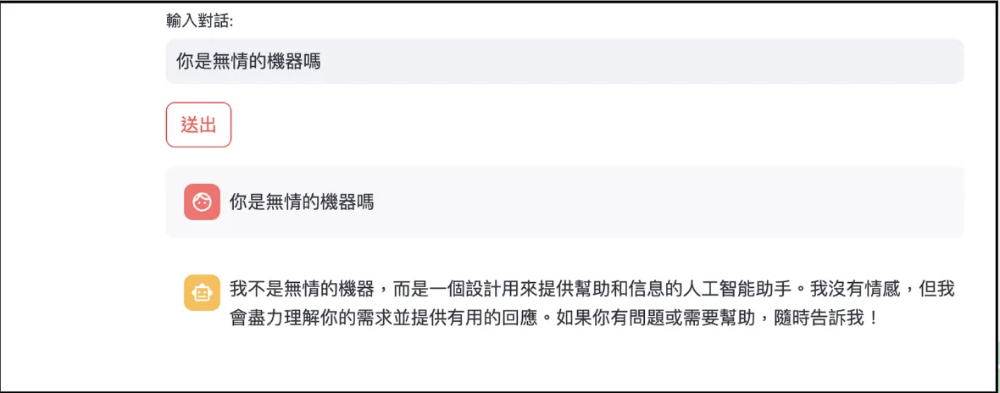
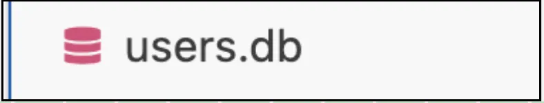
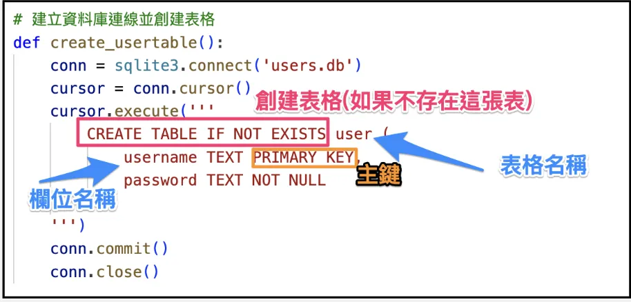
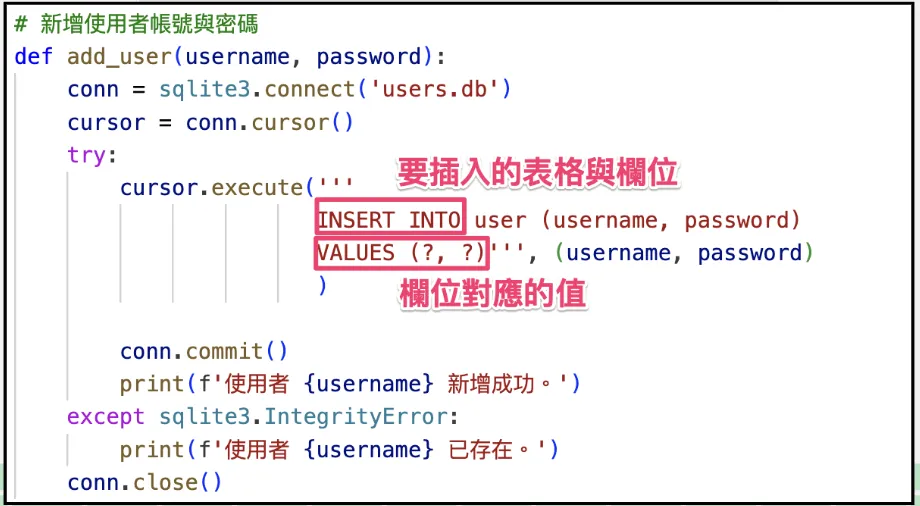
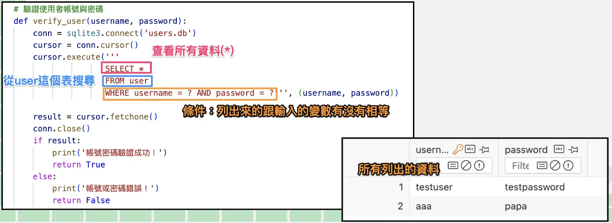

這堂課透過Streamlit展示登入功能，包含與OpenAI機器人對話。先講解資料庫基礎，用SQLite實作。介紹數據表、欄位、主鍵等。透過Python與資料庫連結，建立、新增、查詢資料。再結合Streamlit與OpenAI，實現用戶註冊、登入，與機器人對話功能。密碼、帳號管理技巧也一併探討。結合實作與應用，深入學習資料庫與人工智慧。
前言-會做到什麼功能 這堂課會使用Streamlit進行登入，畢竟有些東西，不是免費就能看的（搓手）
先上成果圖，下圖為登入成功畫面

登入成功後，可以與OpenAI機器人進行交談(需有API Key)

那就可以來練習這個主題了。
其中會簡化一些內容，比如密碼採明碼、API Key直接呈現在程式碼上，這些在真正要上線時，千萬不要這樣做。
先講講資料庫，再來做登入 資料庫是專門處理資料儲存、管理和檢索的資料集合。以註冊會員為例，會儲存會員的帳號密碼。你可能會問，用Excel這種東西不行嗎？
Excel雖然方便，就今天的例子而言，它不好做唯一性的管理，帳號只能是唯一的對吧？不會兩個陌生人用同個帳號，而且在資料量大時，Excel檢索也較慢。
所以會選擇使用資料庫，本次使用SQLite為資料庫教學。
資料庫的特色 這裡會使用GPT來操作資料庫，所以今天不用了解太多（資料庫可以是一整門課程），以下為資料庫的關鍵概念：
數據表（Tables）：資料庫中的數據通常存放在表格中，每個表格包含行和列。每行代表一條數據記錄，列代表該記錄的不同屬性。
欄位（Fields）：表格中的每一列代表一個欄位，定義了特定類型的數據，比如用戶名稱、年齡、地址等。
主鍵（Primary Key）：用來唯一標識表格中的每一條記錄。主鍵可以確保每條數據的唯一性。
資料庫的語法 資料庫的語法稱為SQL (結構化查詢語），用於與資料庫溝通的語言，透過 SQL 可以查詢、插入、更新和刪除數據。
實作步驟一-建立資料庫 建立一檔案名為users.db 。
建立一檔案名為db.py ，專門處理資料庫相關內容程式碼。

接著透過GPT，幫我們對資料庫進行：
建立表格與欄位.
新增資料
查詢資料(帶有條件的查詢)
實作步驟二-Python連結資料庫 安裝資料庫套件
請GPT完成：



db.py完整程式碼
1 2 3 4 5 6 7 8 9 10 11 12 13 14 15 16 17 18 19 20 21 22 23 24 25 26 27 import sqlite3connect ('users.db' )cursor ()execute ('CREATE TABLE IF NOT EXISTS users(username TEXT PRIMARY KEY, password TEXT)' )commit ()close ()password ):connect ('users.db' )cursor ()execute ('INSERT INTO users(username, password) VALUES (?, ?)' , (username, password ))commit ()close ()password ):connect ('users.db' )cursor ()execute ('SELECT * FROM users WHERE username = ? AND password = ?' , (username, password ))close ()return data
結合Streamlit 與 OpenAI 1 2 3 4 5 6 7 8 9 10 11 12 13 14 15 16 17 18 19 20 21 22 23 24 25 26 27 28 29 30 31 32 33 34 35 36 37 38 39 40 41 42 43 44 45 46 47 48 49 50 51 52 53 54 55 56 57 58 59 60 61 62 63 64 65 66 67 68 69 70 71 72 73 74 75 76 77 78 79 80 81 82 83 84 import streamlit as stfrom db import create_usertable, add_user, login_userimport timeif 'logged_in' not in st.session_state:False with st.sidebar:"選擇操作" , ['login' , 'register' ]if choice == 'register' :'註冊新帳號' )'使用者名稱' )'密碼' )if st.button('註冊' ):'註冊成功，正在跳轉至登入頁面...' )2 ) else :'帳號登入' )'使用者名稱' )'密碼' , type ='password' )if st.button('登入' ):if result:f'歡迎，{username} ' )0.5 )True else :'使用者名稱或密碼錯誤' )if st.session_state.logged_in:import streamlit as stfrom openai import OpenAI"" "輸入對話:" )if st.button("送出" ):with st.chat_message("user" ):with st.chat_message("assistant" ):print (client.models.list ())"gpt-4o-mini" ,"role" : "user" , "content" : user_input}],True ,"" for chunk in stream:if chunk.choices[0 ].delta.content:0 ].delta.content